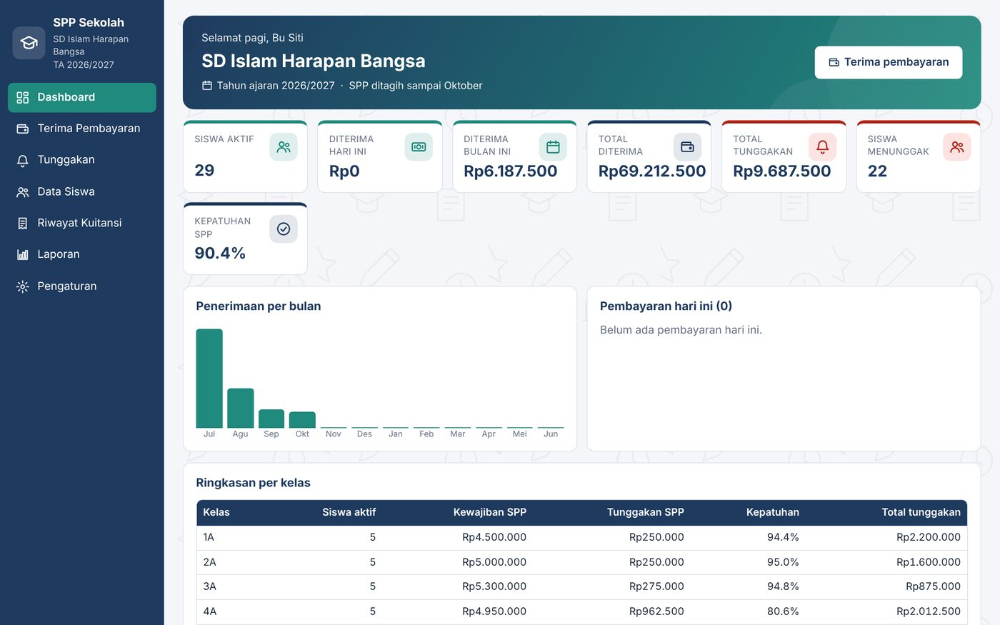
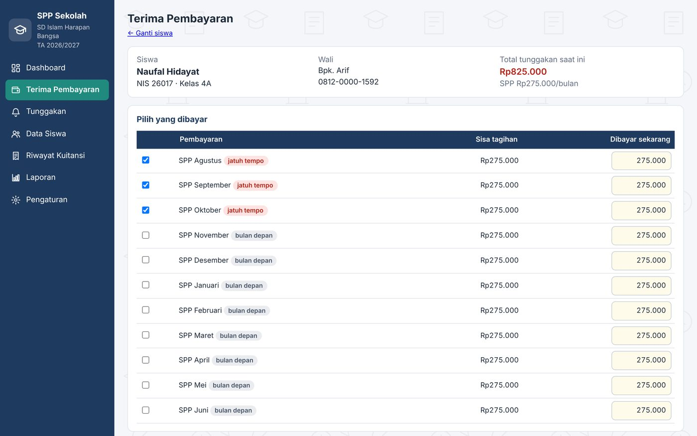
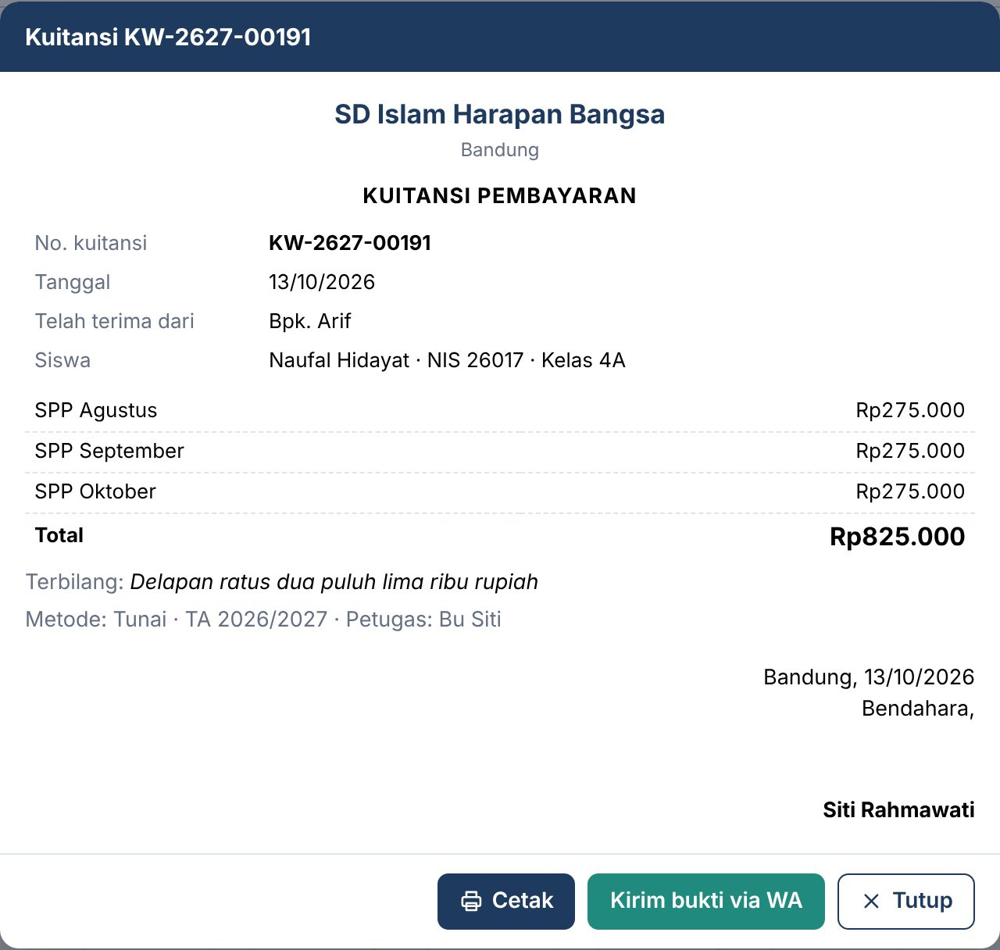
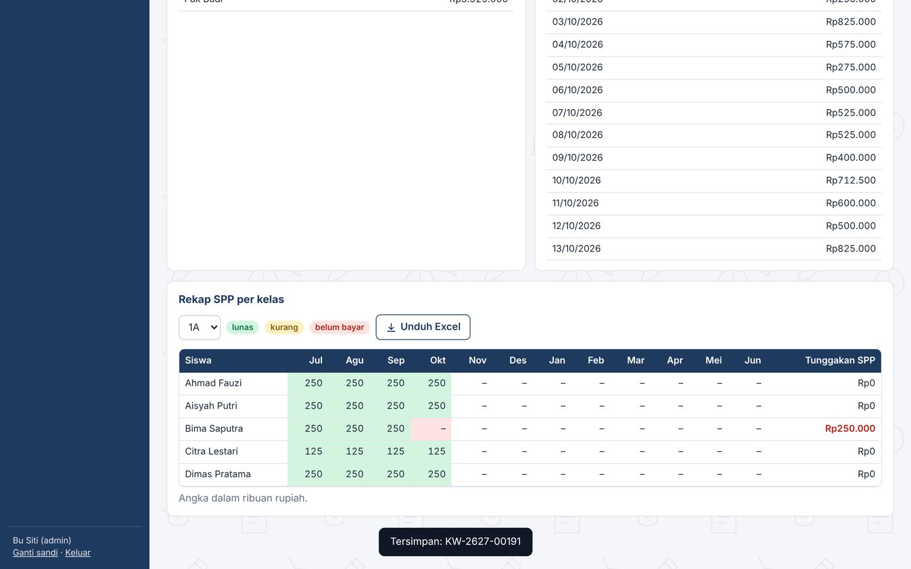
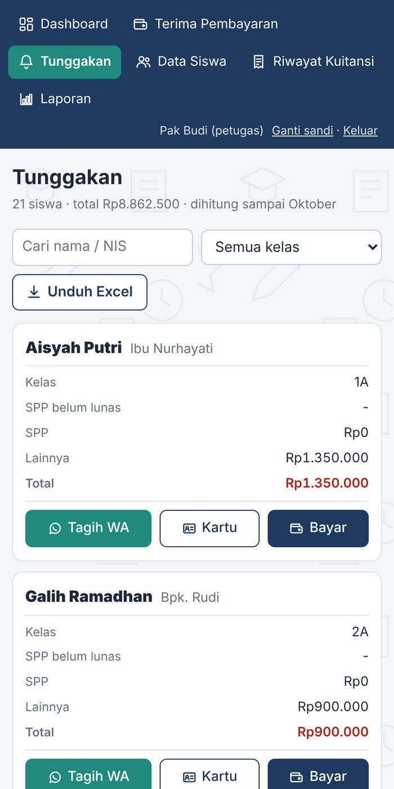

Untuk TU dan bendahara sekolah swasta. Berjalan di laptop sekolah tanpa internet, dibuka dari HP petugas lewat Wi-Fi sekolah. Tanpa biaya langganan cloud bulanan.





Petugas loket, bendahara, atau kepala sekolah bisa membuka aplikasi dari HP masing-masing selama terhubung ke Wi-Fi sekolah. Data tetap tersimpan di satu laptop pusat.
Narasi bahasa Indonesia, memakai data contoh.
Data tidak dikirim ke mana-mana. Tetap jalan saat internet sekolah mati.
Satu file aplikasi di laptop TU. Tidak perlu beli server atau hosting.
Pembukuan yayasan tetap di MYOB. Aplikasi ini mengurus SPP harian; rekap bulanan tinggal diunduh ke Excel.
Dipasang, dilatih, lalu didampingi 14 hari pertama. Bantuan berikutnya lewat WhatsApp.
Harga per sekolah, sesuai jenjang dan jumlah siswa aktif saat pemasangan.
| Jenjang | Jumlah siswa | Pasang + tahun pertama | Per tahun, mulai tahun ke-2 | Selamanya (semua modul) |
|---|---|---|---|---|
| TK PAUD · RA · KB | sampai 100 | Rp1.000.000 | Rp1.000.000 | Rp2.500.000 |
| TK PAUD · RA · KB | lebih dari 100 | Rp1.250.000 | Rp1.000.000 | Rp3.000.000 |
| SD MI | sampai 200 | Rp1.500.000 | Rp1.000.000 | Rp4.500.000 |
| SD MI | lebih dari 200 | Rp1.750.000 | Rp1.000.000 | Rp5.000.000 |
| SMP MTs | sampai 300 | Rp1.750.000 | Rp1.000.000 | Rp5.000.000 |
| SMP MTs | lebih dari 300 | Rp2.000.000 | Rp1.000.000 | Rp5.500.000 |
| SMA SMK · MA | sampai 300 | Rp2.000.000 | Rp1.000.000 | Rp5.500.000 |
| SMA SMK · MA | lebih dari 300 | Rp2.500.000 | Rp1.000.000 | Rp6.000.000 |
Perpanjangan tahunan sudah termasuk bantuan lewat WhatsApp, versi baru, pindah komputer, dan pemulihan data. Paket selamanya tanpa biaya tahunan; pemeliharaan opsional Rp500.000/tahun.
| Kas & Pengeluaran buku kas, pengeluaran, dana BOS | TK Rp200.000 · SD–SMA Rp300.000 |
| Tabungan Siswa setor, tarik, saldo per siswa | TK Rp200.000 · SD–SMA Rp300.000 |
| Absensi Siswa & Guru harian, rekap bulanan | TK Rp200.000 · SD–SMA Rp300.000 |
| Penerimaan Siswa Baru pendaftar, biaya daftar, jadi siswa | TK Rp200.000 · SD–SMA Rp300.000 |
| Paket 4 modul hemat 25% | TK Rp600.000 · SD–SMA Rp900.000 |
Yayasan: diskon 30% untuk unit kedua dan seterusnya (misalnya TK + SD + SMP satu yayasan). Paket selamanya bisa dicicil 2–3 kali.
Lewat video call, atau datang ke sekolah untuk area Bandung. Coba sendiri dengan data contoh.
Dipasang di laptop sekolah, langsung di tempat atau jarak jauh lewat AnyDesk. Data siswa diimpor dari Excel sekolah.
Petugas dilatih sampai bisa: terima bayar, cetak kuitansi, cek tunggakan, tagih lewat WA.
Ada kendala di dua minggu pertama, kami bantu sampai beres.
Tidak. Aplikasi berjalan di laptop sekolah. Internet hanya dipakai saat petugas mengirim pesan tagihan lewat WhatsApp.
Di laptop sekolah sendiri, tidak dikirim ke server mana pun. Aplikasi membuat backup otomatis; kami sarankan juga menyalin backup ke flashdisk seminggu sekali.
Bisa. Petugas lain membuka aplikasi dari komputer atau HP yang terhubung ke Wi-Fi sekolah yang sama, dengan akun masing-masing.
MYOB tetap dipakai untuk pembukuan yayasan. Aplikasi SPP mengurus pembayaran siswa harian, dan rekap bulanannya bisa diunduh ke Excel untuk dimasukkan ke MYOB sebagai satu jurnal.
Selama ada backup, data dipulihkan di laptop baru. Pindah laptop sudah termasuk perpanjangan tahunan.
Ada masa tenggang 14 hari. Setelah itu input baru terkunci, tapi data lama tetap aman dan bisa dilihat.
Bisa. Demo lewat video call, pemasangan dan pelatihan jarak jauh.
Kirim pesan, kami jadwalkan demo lewat video call atau datang langsung (area Bandung). Gratis, tanpa kewajiban membeli.
💬 Minta demo lewat WhatsApp